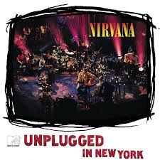
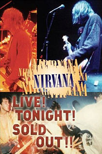
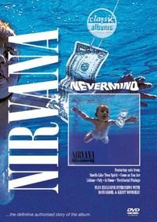
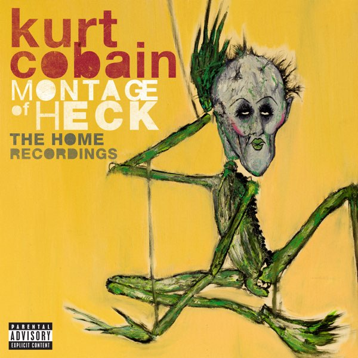

Фильмография

MTV Unplugged in New York
1994
Легендарное акустическое выступление группы, записанное в ноябре 1993 года. Концерт включает уникальные акустические версии хитов и каверы любимых песен группы.

Live! Tonight! Sold Out!!
1994
Документальный фильм, собранный из концертных выступлений, интервью и закулисных съемок. Проект был начат самим Куртом Кобейном.

Classic Albums: Nirvana – Nevermind
2005
Документальный фильм о создании культового альбома "Nevermind". Включает интервью с участниками группы и продюсером Бутчем Вигом.

Kurt Cobain: Montage of Heck
2015
Первый полностью авторизованный документальный фильм о жизни Курта Кобейна, включающий ранее неизвестные записи, рисунки и дневники.